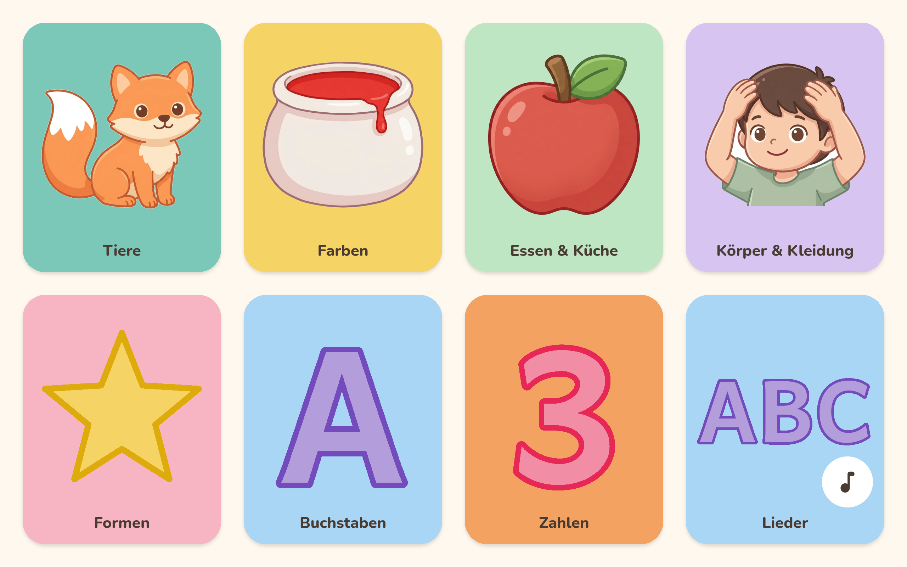
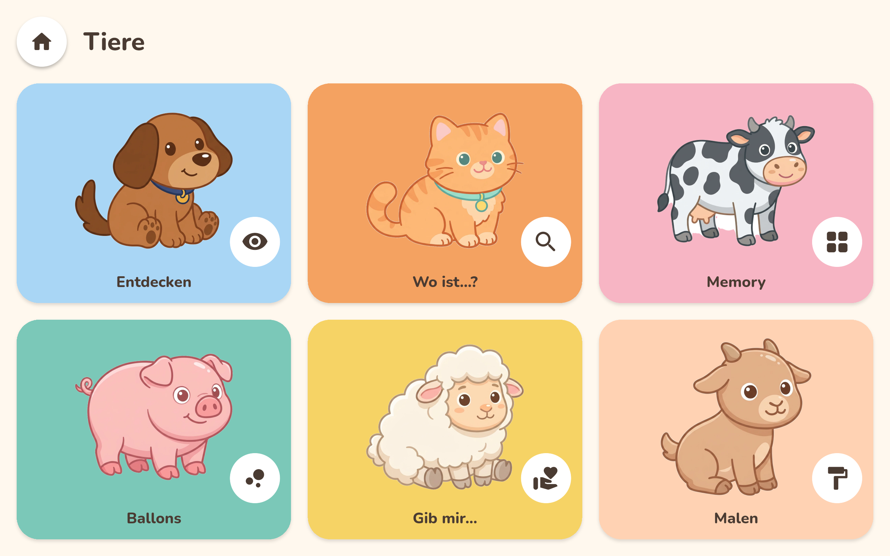
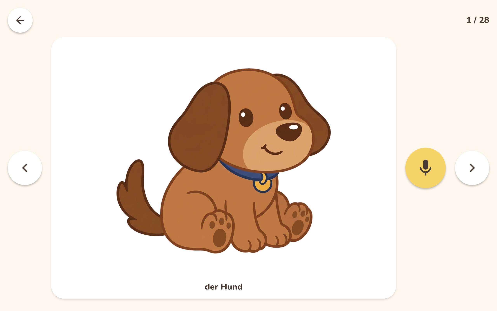
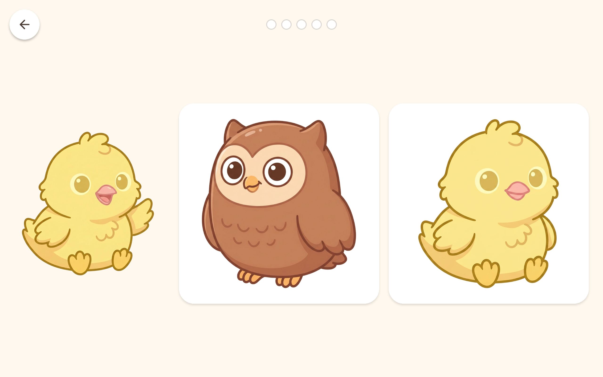

Nukidos bringt Kindern von 3 bis 6 Jahren Deutsch bei – so, wie Kinder Sprache lernen: durch Hören, Nachsprechen und Spielen. Die App spricht nur Deutsch, ganz ohne Übersetzung. WAS DEIN KIND ENTDECKT • 7 Themen mit 148 Wörtern: Tiere, Farben, Essen & Küche, Körper & Kleidung, Formen, Zahlen von 1 bis 10 und Buchstaben von A bis Z mit Ä, Ö und Ü • Jedes Wort mit Bild und klarer Erzählerstimme – Nomen immer mit Artikel („der Hund“, „die Katze“) • Ganze Sätze statt einzelner Wörter: „Das ist der Hund. Der Hund macht Wuff!“ SPIELEN UND WIEDERHOLEN • Entdecken: jedes Wort ansehen, hören und selbst nachsprechen • Wo ist …?: das richtige Bild finden • Memory, Ballons platzen lassen, „Gib mir …“, Sortieren, Ausmalen und Malen • 5 Mitsing-Lieder – die Bilder erscheinen genau dann, wenn das Wort gesungen wird SELBST SPRECHEN Dein Kind tippt aufs Mikrofon, spricht das Wort nach und hört sich danach selbst. Die Aufnahme bleibt auf dem Gerät und wird sofort wieder gelöscht. FÜR KLEINE KINDER GEMACHT • Fehler sind nie schlimm: Ein freundliches Tier hilft weiter, jede Aufgabe endet mit einem Erfolg • Wörter, die noch schwerfallen, kommen öfter wieder • Die Spiele werden von selbst leichter oder schwerer • Große Bilder, große Knöpfe, kein Lesen nötig SICHER UND OHNE ABLENKUNG • Keine Werbung, keine In-App-Käufe • Keine Datenerfassung, kein Konto, kein Internet nötig • Einmal kaufen, alles enthalten Gemacht für Tablets im Querformat.